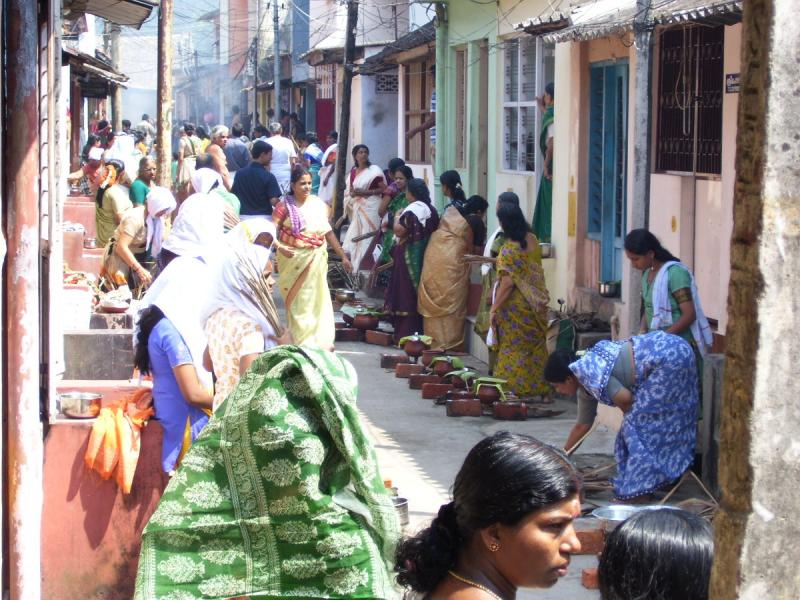
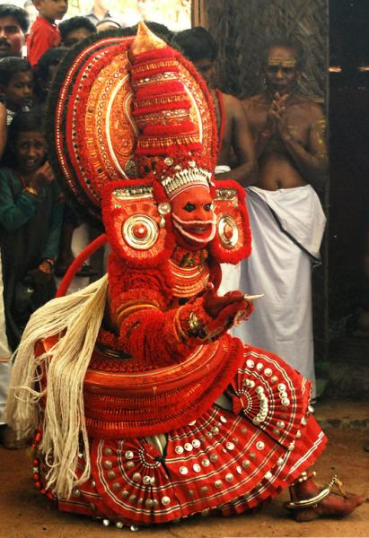
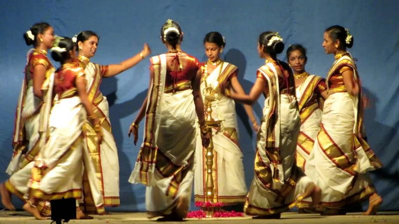
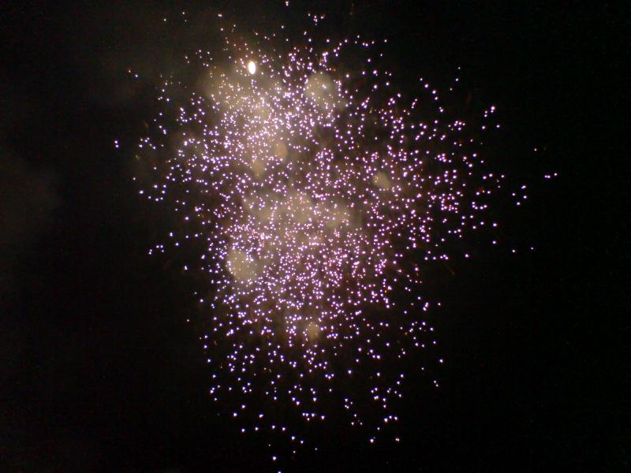

Festivals in Kerala
Attukal Pongala 
Onam

Theyyam 
Thiruvathira 
Thrissur pooram

Vishu 
This is celebrated on the ninth day of the ten long days of the actual festival in the month of February- March, only women are allowed to participate in this festival. The sweet dish called ‘Pongala’ is prepared by the women in the morning and is ready by noon for the offering. This dish is made from boiled rice, jaggery, and coconut. Pongala is then offered to the Attukal Devi and is blessed by the holy priest and taken back by the women to the house to consume the blessed food. Attukal Devi is said to be an incarnation of Goddess Parvati, wife of Lord Shiva. This is one festival, where people celebrate it without remembering their religion, caste or colour. Attukal Pongala is a festival for the women and holds a record in the Guinness Book of World records for having the largest female crowd on February 23, 1997 which saw participation of 1.5 million women
Onam! The national festival of Kerala celebrated for the coming of the King Mahabali. This festival falls in August-September and has a wonderful story attached to it. Onam is a very important festival to the people of Kerala and has been celebrated in a grand manner every year. The houses are decorated with florals for ten days before the actual day. On the day of Onam, presents are exchanged, relatives meet each other no matter how far and sit together to feast on Plantain leaves.
So, what is Theyyam Festival? Remember those painted, masked faces you saw when you were little dancing to beautiful rhythms? Well, Theyyam is just that. This festival is almost 800 years old and has people coming from all over India to perform their dances while dressed up as Deities.
The performers go through 3 main stages being:
a. 1st stage: This is when all the dancers cover themselves with colours, flowers and mask;
b. 2nd stage: This involves self-torture and
c. 3rd stage: This is the most important one of all and it is all about dancing on a rhythm.
This festival is celebrated on a large scale and people have so much fun that it takes them to a whole new level of pleasure.
This festival is mostly celebrated in the month of either December or January. This festival is in total dedication to Lord Shiva and it is believed that this day is perfect and very auspicious to worship Lord Shiva. All the devotees of Lord Shiva make their way to the temple for the Lord’s blessing. The myth behind this festival is that t is celebrated to commemorate the death of the God of Love, Kamadeva. On this day, women get up at 4 am in order to have a bath and sing songs that relate to the God of Love and produce rhythm by splashing water with their hands. In the end, the women stand in a circle and sing songs in Kamadeva’s praise.
This festival is one of the most famous Temple festivals of Kerala. It is celebrated in Vadakkunnathan Temple in Thrissur. People sit on huge elephants that are fully dressed for the occasion outside the temple. It requires a continuous dedication of 3 days which is almost 36 hours in which time people do their traditional pujas, decorations and ens the beautiful festival with breathtaking fireworks. Thrissur Pooram is celebrated mainly to worship Lord Shiva and has a lot of colour and music. The festival is attended by almost 300,000 people across India and makes Kerala busy and filled with people so if you want to attend this festival early booking in hotels will get you good rooftop rooms so you can view the amazing fireworks and parade. Thrissur Pooram is a famous festival of Kerala for its very long and beautiful fireworks that are lit all night.
There is not much to be said about Vishu but it is the Second most important festival of Kerala as it marks the New year which normally falls on the 14th, 15th, or 16th of April. This day determines how the rest of the year is going to be for the malayalis. It is believed that the whole year depends on the first thing that the person sees on the morning of the Vishu and it has to be an auspicious article. So, the people prepare a Kani to see the next day. The main attractions of this festival is the first gift that the elders give to the young ones, shopping and of course, most importantly what the kids enjoy the most- Fireworks!.